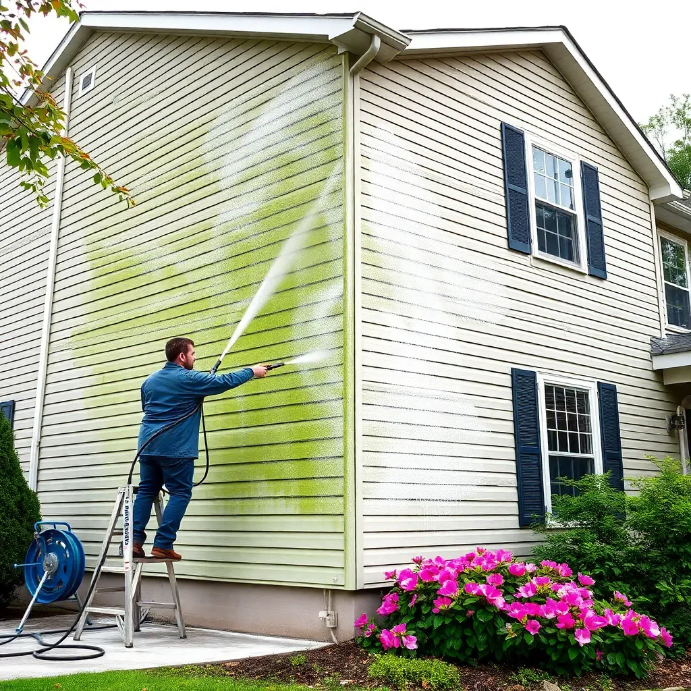

House Washing in Knoxville, TN
Professional soft wash exterior cleaning that safely removes mold, mildew, algae, and years of grime from your home's siding, brick, and trim.

Why Knoxville Homes Need Regular Exterior Washing
Tennessee's humidity, warm temperatures, and dense tree canopy create the perfect breeding ground for mold, mildew, green algae, and black streaks on your home's exterior. What starts as a bit of green discoloration can penetrate porous siding materials, causing premature deterioration, fading paint, and curb appeal that works against your home's value.
Knox Pressure Pros uses professional soft wash technology — not brute-force pressure — to clean your home's exterior thoroughly and safely. Our cleaning solutions are biodegradable and surface-appropriate, targeting organic growth at the root so it doesn't come right back in two weeks.
Our House Washing Process
- Pre-inspection: We walk the property, identify problem areas (mold, staining, oxidation), and protect plants and entry points.
- Pre-treatment application: A professional-grade cleaning solution is applied to dwell on organic growth and loosen embedded dirt.
- Soft wash rinse: Low-pressure water (under 200 PSI) rinses away contaminants without damaging surfaces or forcing water behind siding.
- Detail work: Windows, fascia, gutters, soffits, and trim are cleaned by hand as needed.
- Final walkthrough: We inspect results with you before we pack up. Your satisfaction is guaranteed.
Surfaces We Clean
- Vinyl siding (all profiles)
- Brick and stone exteriors
- Stucco and EIFS
- Painted wood siding
- HardiePlank / fiber cement
- Gutters, soffits, and fascia
Before & After Results
A typical Knoxville home that hasn't been washed in 2–3 years shows black algae streaks on north-facing walls, green mildew buildup near the foundation and under overhangs, and general gray dulling across all surfaces. After a soft wash treatment, homeowners consistently report that their home looks "like new" — dramatically brighter, cleaner color, and renewed curb appeal that neighbors notice immediately.
House Washing Pricing in Knoxville
Pricing depends on home size and condition:
- Single-story home (up to 2,000 sq ft): $200–$320
- Two-story home (2,000–3,500 sq ft): $300–$450
- Large two-story or 3+ stories: $400–$550+
- House + driveway combo: Save 10% when bundled
All estimates are free. We'll give you an exact price before any work begins. See our full pressure washing cost guide for more detail.
Frequently Asked Questions
How much does house washing cost in Knoxville, TN?
House washing in Knoxville typically costs $200–$500 depending on home size, number of stories, and buildup level. Single-story homes average $200–$320; two-story homes run $300–$500. All pricing is upfront with no surprise charges.
What is soft washing and is it safe for my siding?
Soft washing uses low-pressure water combined with professional biodegradable cleaning solutions. It's safe for vinyl, brick, stucco, wood, and HardiePlank. High-pressure washing on these surfaces can crack mortar, damage paint, and void manufacturer warranties — soft wash is the manufacturer-recommended method for home exteriors.
How often should I wash the exterior of my Knoxville home?
Most Knoxville homeowners benefit from annual house washing. The Tennessee Valley's humidity and heavy tree canopy create ideal conditions for mold and algae to return quickly. North-facing walls and heavily shaded areas may need attention twice per year.
Ready to Restore Your Home's Curb Appeal?
Get a free, no-obligation estimate. Most Knoxville homes scheduled within 3–5 business days.